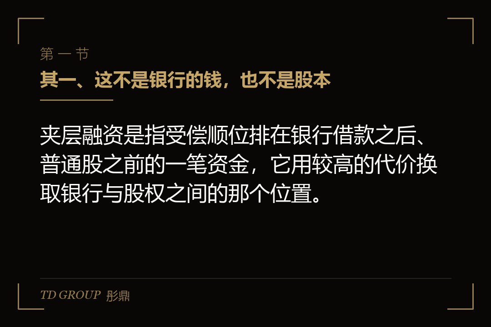
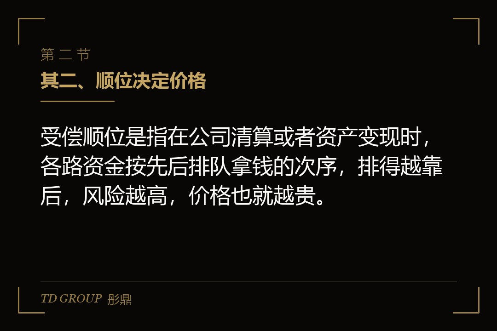
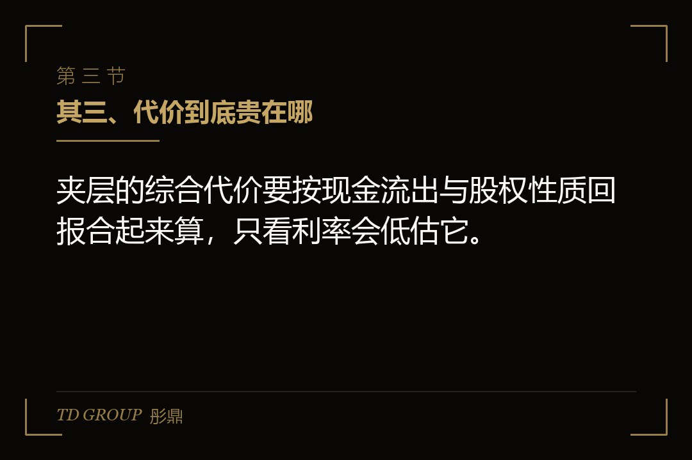

其一、这不是银行的钱，也不是股本

结论先行：夹层融资是指受偿顺位排在银行借款之后、普通股之前的一笔资金，它用较高的代价换取银行与股权之间的那个位置。
假设有家做精密铸造的企业，客户是几家工程机械主机厂，一年营收七个亿左右，净利六千多万。两年前拿到了大额订单，产能要扩一倍，算下来缺口八千万。
它先把路走了一遍。银行那边，厂房和主要设备早在前一轮扩张时已经全部抵押，评估值又被这几年的行业景气度压了一截，新增额度拿不出来。股权这边，按上一轮投资人给的估值，再融一笔八千万，创始团队要出去接近一成五的比例，而这个比例后面上市申报时还会被反复复盘。
夹层就是在这个位置上被提出来的。它不要求新的抵押物，或者说它接受的担保是银行剩下的那部分价值，所以它比银行贵。
其二、顺位决定价格

结论先行：受偿顺位是指在公司清算或者资产变现时，各路资金按先后排队拿钱的次序，排得越靠后，风险越高，价格也就越贵。
打个比方，这栋楼着火时誰先出电梯是有顺序的。银行站在最前面，因为它有抵押物而且合同写得最完整；夹层排在它后面，能拿到的保障是银行吃完之后剩下的那部分价值，或者干脆签一份次级协议，明明白白认下这个位置。
所以它的价格结构也和银行不一样。银行那一笔通常只看利率和少许费用，夹层那一笔是叠起来的：一个高于银行的现金利率段，一笔前端或安排费用，以及一块股权性质的回报。
顺位还决定了它关心什么。银行关心抵押物还在不在、利息有没有按期到账；夹层在银行后面，它更关心这家公司能不能在它到期那一天还得出本金。这两种关心写在协议里，长出来的条款就完全不同：一边盯着资产，一边盯着现金流和到期事件。
所以谈夹层的时候，先问清楚这个顺位是怎么写进协议的：是在担保安排上排在后面，还是通过一份次级协议明确约定受偿顺序。写在哪一处，决定了后面违约的时候谁先动手、谁要等。
最后这一块最常见的两种做法：一种是给出认股权利，即在约定条件下按约定价格取得一定数量的股份；另一种是约定参与超额收益的分配比例。做法不同，对未来的稀释和后续轮次的影响也不同，签之前要把它和下一轮的价格放在一起算。
其三、代价到底贵在哪

结论先行：夹层的综合代价要按现金流出与股权性质回报合起来算，只看利率会低估它。
现金那一半相对好算。假设到账八千万，三年到期，现金利率由双方协商确定并按季付息，每年要付出的利息就是八千万乘以那个利率。这一笔是可以提前测算的确定性支出。
难算的是第二半。认股权利如果被行权，公司要按约定价格新增一部分股份，创始人和上一轮投资人的比例都会被摊薄，而且摊薄发生在后面一轮的价格可能已经涨上去的时候。
所以在谈的时候要做一个动作：把现金利息折算成按年计算的综合成本，再把它和股权稀释的比例放在同一张纸上比较。假设触发行权后公司总股本增加百分之二到三，那么把这段稀释折算成金额，往往高于同类借款之间那点利率差。
还有一个容易被漏的钱：费用。安排费、承诺费、提前还款的罚息、以及中间人费用，这些科目在报表上散落在不同地方，但它们都是实际付出去的钱。
其四、契约条款会管到日常经营
结论先行：夹层协议里的限制性契约，通常把再借款、分红、处置资产、实控人变更与控制权变动这几件事纳入需要事先同意或需要满足维持条件的范围。
银行那一套也有这些条款，但银行通常只关心自己那一笔的安全。夹层因为排在后面，它更怕公司再做新的优先债务、把押剩的那点价值再押给别人，所以它对「新增债务」的限制往往比银行更紧。
假设那家铸造企业后来接了个政府引导基金的增资意向，附加条件之一就是它要先把夹层这笔清掉。这时候夹层协议里的「控制权变更」与「提前还款」两条要同时被触发：控制权变更条款给了资金方要求提前结清的权利，提前还款罚息条款又要求付一笔赔偿金。
处置资产那一条也很实在。假设公司打算卖掉一块闲置的老厂区回笼资金，老厂区不在银行的抵押清单里，而夹层协议的资产处置条款写着单笔超过一定金额需要事先同意。这种时候，先翻协议再谈买家，比先签意向书再回头请求豁免省事得多。
还有一类条款容易被忽略，就是信息权与检查权。夹层没有抵押物兜底，它靠的是对公司状况的持续掌握，所以往往会要求按季报送报表、重大事项及时告知、允许查阅账册。这一条对企业来说意味着两件事：要有人专门负责报送，而且报送的数字要和给银行的、给股东的、给税务的是同一套。
假设那家公司后来因为一条产线检修停了两个月，收入环比掉了一大截。它自己觉得这事正常，而报送义务写的是重大事项及时告知。等到对方来问的时候才解释，解释成本比提前说一声高得多。
其五、到期那一天要靠什么还
结论先行：夹层多为到期一次性还本，它的还款来源通常有三条，把再融资当成默认方案是其中风险最高的一条。
假设这笔八千万三年到期。三条来源分别是：经营活动积累下来的现金；上市或者引入下一轮投资款后替换；再找一笔新的资金来覆盖。
头一条最稳，但它意味着公司这三年要把自由现金流的一部分锁死在还款上，扩张节奏就要跟着这个约束来排。
第二条要看时间能不能对上。上市申报到挂牌之间有多个不确定环节，而到期的那天是一个写死的日期。两件不确定性相加，通常要把夹层的到期日排在预期挂牌日之后至少半年，或者争取在申报前先用另一笔钱把它换掉。
第三条就是再融资。它的问题在于，需要再融资的那个时点，往往是公司经营或者资本市场最不利的那一刻。
其六、签之前先算清的三笔账
结论先行：判断夹层能不能用，不需要比较感觉，只需要把三笔账算出来再放在一起看。
头一笔是看这批钱用起来之后能不能挣得回它的综合代价。假设那八千万投出去之后新增产能带来的是两个亿的收入和两千万的息税前利润，那么把它和一年两千万出头的综合成本放在一起，这笔交换就成立；反过来，如果新增产能只能带来微薄的增长，那么这笔钱只是把今天的问题推到三年后。
第二笔是把它和股权放在一起比。这一笔的最大好处是不稀释投票权，代价是固定付息把财务弹性收窄。
第三笔是看最坏情况下会发生什么。假设订单落空、行业下行，经营性现金流转负，这时候夹层的固定付息条款和交叉违约条款会同时启动，而那时候考验的就是担保结构和当时的谈判空间。
这三笔算完之后仍然成立的交易，通常也不会因为换了开会顺序而崩掉。
其七、什么时候不该用它
结论先行：现金流波动大、还没有稳定盈利、或者到期只能靠再融资去还的项目，都不适合用夹层。
判断标准其实很朴素：把这笔钱未来每一年要付的现金列出来，再看公司过去几年最差那一年赚到的经营性现金有多少。如果最差那一年也够付，这笔交易就稳；如果景气那几年也只是勉强够，那么它本质上是在赌行业不会走坏。
这条线在华尔街彤鼎俱乐部的交流里被反复提到过一次：企业融资难的时候，最容易上桌的就是这类结构，因为它当下不用稀释股权，而代价被推到了几年后。推到几年后不等于没有，只是那时候站在谈判桌对面的，是另一批更不好说话的人。
所以真正该问的不是这笔钱贵不贵，而是它换来的时间够不够把产能变成现金。够，它就是划算的；不够，它只是把今天的问题精确地挪到了三年后的那个月。
本文为知识梳理，不构成专业意见。具体条款、代价与适用范围以双方正式协议、现行监管要求与当地税务机关口径为准，建议由律师、会计师与税务师共同核过之后再签。